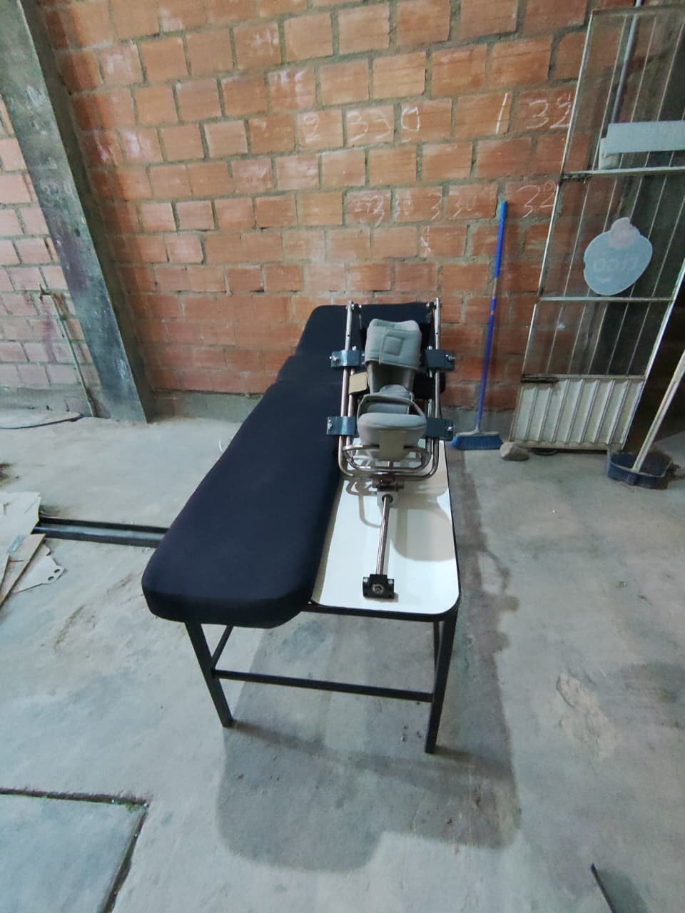
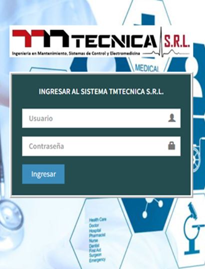

HOLA!, ME LLAMO...
Magaly
Licenciada en Ingeniería de Sistemas Informáticos y T.S. en Electrónica
Proyecto 1

Proyecto 2

Proyecto 3
ACERCA DE MÍ
Sobre mí: Licenciada en Ingeniería de Sistemas y T.S. en Electrónica, enfocada
en crear soluciones eficientes a través del código y el hardware.
Mis metas: Convertirme en Desarrolladora Full Stack senior y liderar proyectos
de transformación digital.
Hobby: Entusiasta de la tecnología, el diseño de circuitos y el aprendizaje
constante de nuevas herramientas de programación.
Habilidades
Software: JavaScript, PHP, Java, Python, C++, SQL Server, MySQL. Redes: MikroTik MTCNA, Cisco CCNA. Electrónica: Diseño de circuitos y mantenimiento industrial. Idiomas: Inglés Técnico.Experiencia Destacada
Desarrollador Freelance
Sistemas de inventarios y gestión de bases de datos.
Sistemas de inventarios y gestión de bases de datos.
ECONSBAUM S.R.L.
Mantenimiento eléctrico y tableros industriales.
Mantenimiento eléctrico y tableros industriales.
Asesora Técnica
Especialista en hardware y robótica.
Especialista en hardware y robótica.